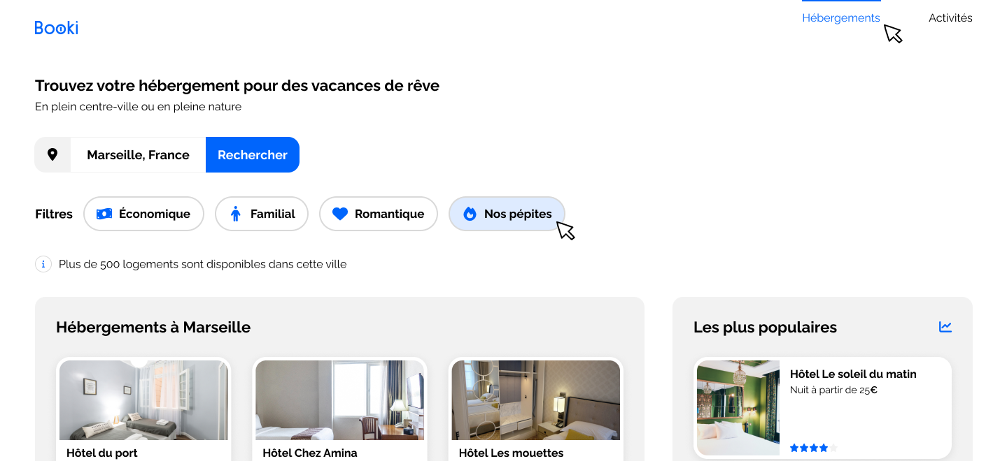

Conception d’un site responsive à partir d’une maquette Figma
L’objectif de ce projet était de développer un site web responsive à partir d’une maquette Figma fournie. J’ai reproduit l’interface de manière fidèle en assurant une structure HTML claire et sémantique, tout en respectant les standards du web.
Le travail consistait notamment à analyser la maquette pour définir l’architecture du site, intégrer chaque section (header, formulaire de recherche, filtres, cartes d’hébergement, footer) et adapter l’affichage aux différents supports : mobile, tablette et desktop. Une attention particulière a été portée au rendu pixel-perfect et à la cohérence visuelle.
Ce projet m’a permis de renforcer des compétences essentielles en intégration front-end. J’ai amélioré ma capacité à analyser une maquette Figma, à construire une structure HTML sémantique et à créer un design entièrement responsive. J’ai également perfectionné ma gestion du pixel-perfect, l’optimisation des mises en page avec Flexbox et l’organisation du code CSS grâce à la méthode BEM.
Enfin, j’ai développé de meilleurs réflexes de debugging grâce aux DevTools, ce qui m’a aidée à résoudre des problèmes d’alignement, d’espacement et de responsive.
Voir le code source du projet sur GitHub